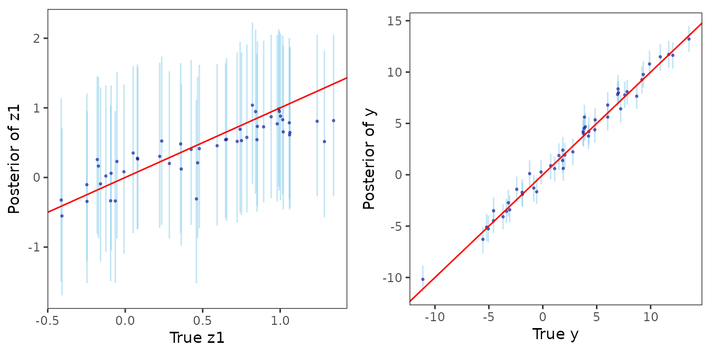
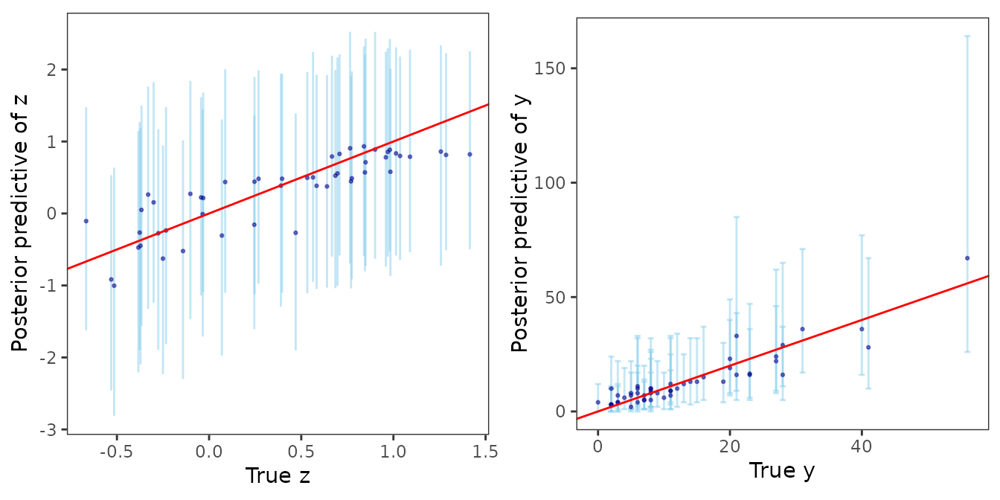
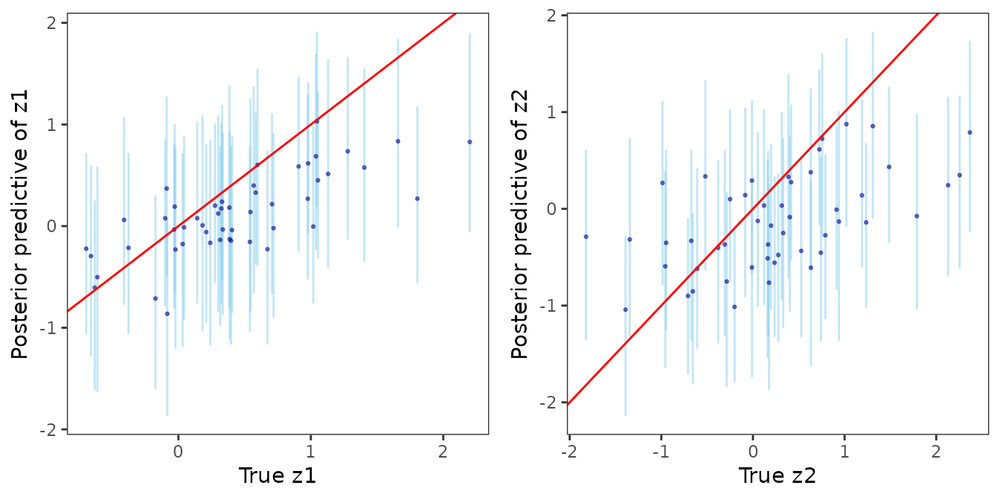

In this article, we discuss the function -
This function can be used to obtain posterior predictive inference at
unobserved locations in space or time. It is applied on the output of
functions spLMexact(), spLMstack(),
spGLMexact(), spGLMstack(),
stvcGLMexact(), stvcGLMstack() etc.
The joint argument in posteriorPredict()
indicates if the predictions at the new locations or times are to be
made based on the joint posterior predictive distribution or not. If
joint=FALSE, then the individual predictions are made from
their corresponding posterior predictive distributions.
Prediction in spatial linear model
Define the collection of candidate parameters and fit the model using
spLMstack().
# training and test data sizes
n_train <- 150
n_pred <- 50
data("simGaussian")
dat_train <- simGaussian[1:n_train, ]
dat_pred <- simGaussian[n_train + 1:n_pred, ]
mod1 <- spLMstack(y ~ x1, data = dat_train,
coords = as.matrix(dat_train[, c("s1", "s2")]),
cor.fn = "matern",
params.list = list(phi = c(1.5, 3, 5),
nu = c(0.75, 1.25),
noise_sp_ratio = c(0.5, 1, 2)),
n.samples = 1000, loopd.method = "psis",
parallel = FALSE, solver = "ECOS", verbose = TRUE)##
## STACKING WEIGHTS:
##
## | phi | nu | noise_sp_ratio | weight |
## +----------+-----+------+----------------+--------+
## | Model 1 | 1.5| 0.75| 0.5| 0.72 |
## | Model 2 | 3.0| 0.75| 0.5| 0.00 |
## | Model 3 | 5.0| 0.75| 0.5| 0.28 |
## | Model 4 | 1.5| 1.25| 0.5| 0.00 |
## | Model 5 | 3.0| 1.25| 0.5| 0.00 |
## | Model 6 | 5.0| 1.25| 0.5| 0.00 |
## | Model 7 | 1.5| 0.75| 1.0| 0.00 |
## | Model 8 | 3.0| 0.75| 1.0| 0.00 |
## | Model 9 | 5.0| 0.75| 1.0| 0.00 |
## | Model 10 | 1.5| 1.25| 1.0| 0.00 |
## | Model 11 | 3.0| 1.25| 1.0| 0.00 |
## | Model 12 | 5.0| 1.25| 1.0| 0.00 |
## | Model 13 | 1.5| 0.75| 2.0| 0.00 |
## | Model 14 | 3.0| 0.75| 2.0| 0.00 |
## | Model 15 | 5.0| 0.75| 2.0| 0.00 |
## | Model 16 | 1.5| 1.25| 2.0| 0.00 |
## | Model 17 | 3.0| 1.25| 2.0| 0.00 |
## | Model 18 | 5.0| 1.25| 2.0| 0.00 |
## +----------+-----+------+----------------+--------+Define the new coordinates, run posteriorPredict(), and
finally sample from the stacked posterior.
sp_pred <- as.matrix(dat_pred[, c("s1", "s2")])
X_new <- as.matrix(cbind(rep(1, n_pred), dat_pred$x1))
mod.pred <- posteriorPredict(mod1, coords_new = sp_pred, covars_new = X_new, joint = TRUE)
post_samps <- stackedSampler(mod.pred)Finally, we analyze the posterior predictive distributions of the spatial process as well as the responses against their corresponding true values in order to assess how well the predictions are made.
postpred_z <- post_samps$z.pred
post_z_summ <- t(apply(postpred_z, 1, function(x) quantile(x, c(0.025, 0.5, 0.975))))
z_combn <- data.frame(z = dat_pred$z_true, zL = post_z_summ[, 1],
zM = post_z_summ[, 2], zU = post_z_summ[, 3])
plot_z_summ <- ggplot(data = z_combn, aes(x = z)) +
geom_errorbar(aes(ymin = zL, ymax = zU), alpha = 0.5, color = "skyblue") +
geom_point(aes(y = zM), size = 0.5, color = "darkblue", alpha = 0.5) +
geom_abline(slope = 1, intercept = 0, color = "red", linetype = "solid") +
xlab("True z1") + ylab("Posterior of z1") + theme_bw() +
theme(panel.grid = element_blank(), aspect.ratio = 1)
postpred_y <- post_samps$y.pred
post_y_summ <- t(apply(postpred_y, 1, function(x) quantile(x, c(0.025, 0.5, 0.975))))
y_combn <- data.frame(y = dat_pred$y, yL = post_y_summ[, 1],
yM = post_y_summ[, 2], yU = post_y_summ[, 3])
plot_y_summ <- ggplot(data = y_combn, aes(x = y)) +
geom_errorbar(aes(ymin = yL, ymax = yU), alpha = 0.5, color = "skyblue") +
geom_point(aes(y = yM), size = 0.5, color = "darkblue", alpha = 0.5) +
geom_abline(slope = 1, intercept = 0, color = "red", linetype = "solid") +
xlab("True y") + ylab("Posterior of y") + theme_bw() +
theme(panel.grid = element_blank(), aspect.ratio = 1)
ggpubr::ggarrange(plot_z_summ, plot_y_summ)
Prediction in spatial generalized linear model
Define the collection of candidate parameters and fit the model using
spGLMstack(). We use spatial Poisson count data
simPoisson for this example.
# training and test data sizes
n_train <- 150
n_pred <- 50
# load spatial Poisson data
data("simPoisson")
dat_train <- simPoisson[1:n_train, ]
dat_pred <- simPoisson[n_train + 1:n_pred, ]
mod1 <- spGLMstack(y ~ x1, data = dat_train, family = "poisson",
coords = as.matrix(dat_train[, c("s1", "s2")]), cor.fn = "matern",
params.list = list(phi = c(3, 4, 5), nu = c(0.5, 1.0),
boundary = c(0.5)),
priors = list(nu.beta = 5, nu.z = 5),
n.samples = 1000,
loopd.controls = list(method = "CV", CV.K = 10, nMC = 500),
verbose = TRUE)## Some priors were not supplied. Using defaults.##
## STACKING WEIGHTS:
##
## | phi | nu | boundary | weight |
## +---------+-----+-----+----------+--------+
## | Model 1 | 3| 0.5| 0.5| 0.000 |
## | Model 2 | 4| 0.5| 0.5| 0.000 |
## | Model 3 | 5| 0.5| 0.5| 0.000 |
## | Model 4 | 3| 1.0| 0.5| 0.079 |
## | Model 5 | 4| 1.0| 0.5| 0.000 |
## | Model 6 | 5| 1.0| 0.5| 0.921 |
## +---------+-----+-----+----------+--------+Define the new coordinates, run posteriorPredict(), and
finally sample from the stacked posterior. To demonstrate the
usage, we specify joint=FALSE for the prediction task.
sp_pred <- as.matrix(dat_pred[, c("s1", "s2")])
X_new <- as.matrix(cbind(rep(1, n_pred), dat_pred$x1))
mod.pred <- posteriorPredict(mod1, coords_new = sp_pred, covars_new = X_new, joint = FALSE)
post_samps <- stackedSampler(mod.pred)Finally, we analyze the posterior predictive distributions of the spatial process as well as the responses against their corresponding true values in order to assess how well the predictions are made.
postpred_z <- post_samps$z.pred
post_z_summ <- t(apply(postpred_z, 1, function(x) quantile(x, c(0.025, 0.5, 0.975))))
z_combn <- data.frame(z = dat_pred$z_true, zL = post_z_summ[, 1],
zM = post_z_summ[, 2], zU = post_z_summ[, 3])
plot_z_summ <- ggplot(data = z_combn, aes(x = z)) +
geom_errorbar(aes(ymin = zL, ymax = zU), alpha = 0.5, color = "skyblue") +
geom_point(aes(y = zM), size = 0.5, color = "darkblue", alpha = 0.5) +
geom_abline(slope = 1, intercept = 0, color = "red", linetype = "solid") +
xlab("True z") + ylab("Posterior predictive of z") + theme_bw() +
theme(panel.grid = element_blank(), aspect.ratio = 1)
postpred_y <- post_samps$y.pred
post_y_summ <- t(apply(postpred_y, 1, function(x) quantile(x, c(0.025, 0.5, 0.975))))
y_combn <- data.frame(y = dat_pred$y, yL = post_y_summ[, 1],
yM = post_y_summ[, 2], yU = post_y_summ[, 3])
plot_y_summ <- ggplot(data = y_combn, aes(x = y)) +
geom_errorbar(aes(ymin = yL, ymax = yU), alpha = 0.5, color = "skyblue") +
geom_point(aes(y = yM), size = 0.5, color = "darkblue", alpha = 0.5) +
geom_abline(slope = 1, intercept = 0, color = "red", linetype = "solid") +
xlab("True y") + ylab("Posterior predictive of y") + theme_bw() +
theme(panel.grid = element_blank(), aspect.ratio = 1)
ggpubr::ggarrange(plot_z_summ, plot_y_summ)
Prediction in spatially-temporally varying coefficients model
Define the collection of candidate parameters and fit the model using
stvcGLMstack(). We use spatial Poisson count data
sim_stvcPoisson for this example.
# Example 2: Spatial-temporal model with varying coefficients
n_train <- 150
n_pred <- 50
data("sim_stvcPoisson")
dat <- sim_stvcPoisson[1:(n_train + n_pred), ]
# split dataset into test and train
dat_train <- dat[1:n_train, ]
dat_pred <- dat[n_train + 1:n_pred, ]
# create list of candidate models (multivariate)
mod.list2 <- candidateModels(list(phi_s = list(1, 2, 3),
phi_t = list(1, 2, 4),
boundary = c(0.5, 0.75)), "cartesian")
# fit a spatial-temporal varying coefficient model using predictive stacking
mod1 <- stvcGLMstack(y ~ x1 + (x1), data = dat_train, family = "poisson",
sp_coords = as.matrix(dat_train[, c("s1", "s2")]),
time_coords = as.matrix(dat_train[, "t_coords"]),
cor.fn = "gneiting-decay",
process.type = "multivariate",
candidate.models = mod.list2,
loopd.controls = list(method = "CV", CV.K = 10, nMC = 500),
n.samples = 500)##
## STACKING WEIGHTS:
##
## | phi_s | phi_t | boundary | weight |
## +----------+-------+-------+----------+--------+
## | Model 1 | 1| 1| 0.50| 0.000 |
## | Model 2 | 2| 1| 0.50| 0.000 |
## | Model 3 | 3| 1| 0.50| 0.152 |
## | Model 4 | 1| 2| 0.50| 0.000 |
## | Model 5 | 2| 2| 0.50| 0.000 |
## | Model 6 | 3| 2| 0.50| 0.172 |
## | Model 7 | 1| 4| 0.50| 0.000 |
## | Model 8 | 2| 4| 0.50| 0.000 |
## | Model 9 | 3| 4| 0.50| 0.339 |
## | Model 10 | 1| 1| 0.75| 0.000 |
## | Model 11 | 2| 1| 0.75| 0.000 |
## | Model 12 | 3| 1| 0.75| 0.000 |
## | Model 13 | 1| 2| 0.75| 0.000 |
## | Model 14 | 2| 2| 0.75| 0.000 |
## | Model 15 | 3| 2| 0.75| 0.000 |
## | Model 16 | 1| 4| 0.75| 0.000 |
## | Model 17 | 2| 4| 0.75| 0.000 |
## | Model 18 | 3| 4| 0.75| 0.336 |
## +----------+-------+-------+----------+--------+Define the new coordinates, run posteriorPredict(), and
finally sample from the stacked posterior. We use
joint=FALSE for this particular example.
# prepare new coordinates and covariates for prediction
sp_pred <- as.matrix(dat_pred[, c("s1", "s2")])
tm_pred <- as.matrix(dat_pred[, "t_coords"])
X_new <- as.matrix(cbind(rep(1, n_pred), dat_pred$x1))
mod_pred <- posteriorPredict(mod1,
coords_new = list(sp = sp_pred, time = tm_pred),
covars_new = list(fixed = X_new, vc = X_new),
joint = FALSE)
# sample from the stacked posterior and posterior predictive distribution
post_samps <- stackedSampler(mod_pred)Finally, we analyze the posterior predictive distributions of the spatial-temporal process by plotting them against their corresponding true values.
postpred_z <- post_samps$z.pred
post_z1_summ <- t(apply(postpred_z[1:n_pred,], 1,
function(x) quantile(x, c(0.025, 0.5, 0.975))))
post_z2_summ <- t(apply(postpred_z[n_pred + 1:n_pred,], 1,
function(x) quantile(x, c(0.025, 0.5, 0.975))))
z1_combn <- data.frame(z = dat_pred$z1_true, zL = post_z1_summ[, 1],
zM = post_z1_summ[, 2], zU = post_z1_summ[, 3])
z2_combn <- data.frame(z = dat_pred$z2_true, zL = post_z2_summ[, 1],
zM = post_z2_summ[, 2], zU = post_z2_summ[, 3])
library(ggplot2)
plot_z1_summ <- ggplot(data = z1_combn, aes(x = z)) +
geom_errorbar(aes(ymin = zL, ymax = zU), alpha = 0.5, color = "skyblue") +
geom_point(aes(y = zM), size = 0.5, color = "darkblue", alpha = 0.5) +
geom_abline(slope = 1, intercept = 0, color = "red", linetype = "solid") +
xlab("True z1") + ylab("Posterior predictive of z1") + theme_bw() +
theme(panel.grid = element_blank(), aspect.ratio = 1)
plot_z2_summ <- ggplot(data = z2_combn, aes(x = z)) +
geom_errorbar(aes(ymin = zL, ymax = zU), alpha = 0.5, color = "skyblue") +
geom_point(aes(y = zM), size = 0.5, color = "darkblue", alpha = 0.5) +
geom_abline(slope = 1, intercept = 0, color = "red", linetype = "solid") +
xlab("True z2") + ylab("Posterior predictive of z2") + theme_bw() +
theme(panel.grid = element_blank(), aspect.ratio = 1)
ggpubr::ggarrange(plot_z1_summ, plot_z2_summ)